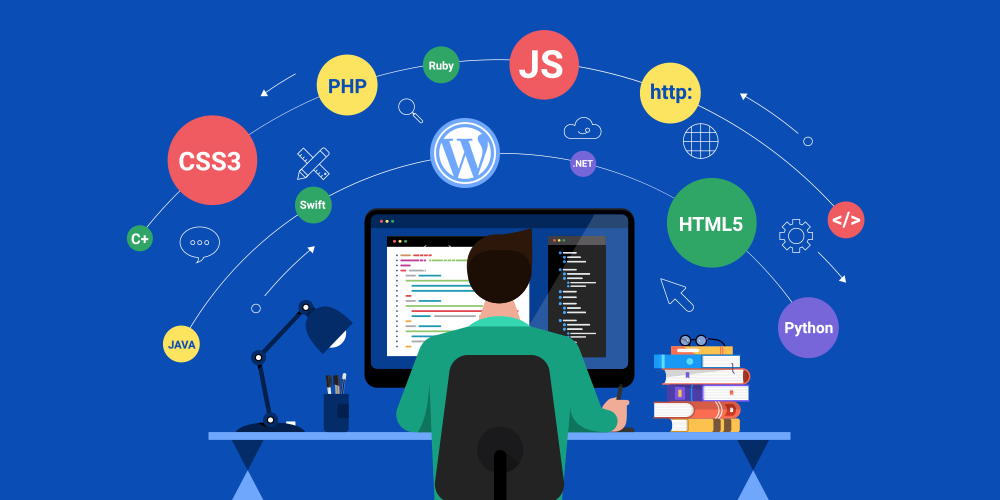

WEB DESIGNING
Web design refers to the design of websites that are displayed on the internet. It usually refers to the user experience aspects of website development rather than software development.Web design used to be focused on designing websites for desktop browsers; however, since the mid-2010s, design for mobile and tablet browsers has become ever-increasingly important.

Two of the most common methods for designing websites that work well both on desktop and mobile are responsive and adaptive design. In responsive design, content moves dynamically depending on screen size; in adaptive design, the website content is fixed in layout sizes that match common screen sizes. Preserving a layout that is as consistent as possible between devices is crucial to maintaining user trust and engagement. As responsive design can present difficulties in this regard, designers must be careful in relinquishing control of how their work will appear. If they are responsible for the content as well, while they may need to broaden their skillset, they will enjoy having the advantage of full control of the finished product.

A well-designed website can help you form a good impression on your prospective customers. It can also help you nurture your leads and get more conversions. But, more importantly, it provides good user experience and helps your website visitors access and navigate your website with ease.When a user lands on a site, good design can make them feel something. If the site looks modern, offers bright colors, and is well organized – it's welcoming in visitors and encouraging them to stick around for a whileYour website is one of the most important aspects of your brand’s online presence and it's important that you design it right. Your website is also the place where you nurture your bottom-of-the-funnel leads to get conversions. So, you can’t afford any website fails that might cause your prospects to bounce off your website.
Our web design course content is created and updated by experienced web designers to match the present standards of web technologies. In our website program, we teach all the aspects of layout designing. Our commitment is to make you a professional web designer. By the end of this project, you will create a full web-site that is attractive and user friendly using a free content management system, WordPress. You will learn how to create a website utilizing themes and plug-ins using the web creation tool. You’ll have a virtual space to showcase your business with customers who want to stay connected.